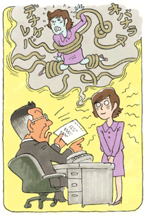

強迫性障害2
強迫観念の森に迷い込んで
（強迫観念）
早川 恵（仮名）35歳・OL
内弁慶で、頭の中で格闘する強迫観念の日々
私は子供の頃より人前で話しをしたり、人と関わったり接することが、とても嫌でした。誰にでも人見知りしてしまい、警戒心の強い内弁慶タイプでした。何事にたいしてもスッと手が出ない私は、いつもグルグル頭の中だけで考えて、やっと行動するという風です。当然、いつも緊張を虐げられる生活になります。何度も何度も持ち物を確認しないと心配で家から出られない。不安感から緊張で手足が汗でびしょびしょ、冬でも身体から冷や汗がでたりという感じでした。引きこもりがちで、体調もよく崩して寝込んだりしてました。それでも負けん気だけは人一倍強く弱みを人にみせたくないと表面上は強がって見せたりもしていました。しかし相手にあわさないといけないと思ったかと思えば、全くその反対の考えが頭を支配して、いつも立ち往生していました。
頭の中での格闘を人には見せたくないので嫌なことや不安な感情をどんどんおさえ込むようになっていきました。「どんな感情も押さえ込めばなんとかなる、解決する」とその頃は思っていました。これがとんでもない間違いのもとであったのです。

クリスチャンの両親と仏教の祖母からは「人を嫌ってはいけない」「良い行いをしないといけない」「人には親切にしないといけない」ということをよく言われ、思い込みの激しい私はドンドンと自分の中で「こうあらねば」ということを膨らませていきました。また、そうできないことに対しとらわれていきました。
両親や祖母が人を嫌ってはいけないなどといいながら、家では知り合いのことを悪く言ったり、批判したりすることもあったりして本音と建前の違いに嫌気がさし偽善者のようにしか思えなくなりました。頭の中ではたえず両親を責めるようになり、ほとんど口をきかなくなりました。いつまでもグルグル妄想を重ね、何が素直か何が強情なのかもわからなくなっていきました。本当に苦しい強迫観念地獄です。当時の私には何が辛いのか何が嫌なのかはっきり説明することができませんでした。何か親に話しかけられても「うるさいな!」と言い返すことぐらいしかできませんでした。
就職後、母に初めて明かした自分の悩み
それでも何とか学校には行っていました。勉強は最低限必要なことだけやり、特定の人とだけ関わるという感じでした。実際は現実逃避の生活を送っていました。短大を卒業後、父が仕事上お世話になった方が勤務される会社の試験を受けて就職が決まりました。こんな私でも就職できてうれしかったのですが、縁故入社のような状態にとても引け目を感じていました。その会社では、私の嫌な新入社員研修がありました。新入社員は30人程度でしたが、みんなの前での発表や、グループ討議、団体行動はなじめずに途方に暮れました。
入社直前の宿泊研修に行く途中で同期の男性の一人とずっと一緒になり、集合場所まで行ったのですが、そのことに対してみなから冷やかされました。そして、いろいろと根も葉もない噂をたてられたり、嫌みを言われました。仲間はずれというか孤立したような状態になってしまいました。思い込みの激しい私ですから、ますます居ても立ってもおられなくなりました。そのことがきっかけで、私はこの会社では、もうやっていけないと思いはじめました。また、この会社でやっていけなかったら、この先私の将来はなくもうダメだと思いました。落ち込み状態がひどくなり、食事もほとんど喉を通らないという感じになってしまいました。
私の鬱ぐ様子があまりにも変だったので、母が気づいて会社で何があったのかと心配をして聞いてくれました。幼い頃から今日まで黙って押し通していた感情が堰を切ったように流れていきました。会社での出来事、小さい頃からどれだけ悩んでいたかをとうとう話したのです。今まで話したことがなかっただけに、この日の母の驚きは大変なものでした。（母は私が小さい頃から悩んでいるとは知りませんでした。なぜこんな態度をとるのだろうと思っていたようです。）
母から勧められ初めて知った森田療法
新聞を見て森田療法や生活の発見会（神経症の自助グループ）の事を知っていた母は、一度発見会に行ってみてはどうかとすすめました。病院に行ったり薬をのんだりしたくなかった私は、森田のことなど何もしらなかったのですがここでなんとかなるかなというかすかな思いで初心者懇談会に参加することにしました。熱心そうな方が一生懸命に森田療法を語っておられました。そこでとりあえず発見会に入会してみようかなと思いました。
集談会（生活の発見会の会合）に参加するようになり、同じような悩みを持った方が話をしてくださり、私の話に共感していただき、ホッとできたのがうれしかったです。しかし、いろいろ言っていただいても素直でない私は、元気なあなたと私とでは違いすぎると感じ、少し距離をおいて参加していました。
一方その頃の私は、会社勤めをしながらも、毎日家に帰ってから「もう会社に行きたくない、辞めたい。」と泣いて、親に愚痴ってばかりいました。頭の中は会社での嫌な出来事で一杯でした。会社では私の苦手な研修会が沢山ありました。研修会の都度、みんなの前で何か失敗するのではないか、また疎外されるのではないか、そんなことばかりが頭に浮かび、その都度落ち込んでいきました。
しかしそんな時に、集談会の先輩たちが、「辛いけど頑張ろうね」と優しく声援してくれました。私は愚痴を言わないように注意し、感情はそのままに仕事や家のことなどの目的をはたすように、少しずつ行動していくようになりました。
それまでは、会社から家に帰ると親に愚痴を言っては泣いて何もせずすぐ寝てしまうという生活をしていたのですが、食事の後かたづけやアイロンがけ等、家のことなどに手をだしていくようになりました。いつも頭の中だけで、堂々巡りを繰り返していた私が、常に行動を重視するようになっていったのです。嫌な感情はそのままにして、会社の仕事、行事や研修なども目的をはたすようにしていきました。嫌だなと感じている裏には、人から認めてもらいたいという思いや仲良くやっていきたいという欲求が強くあるんだな、ということもわかってきました。
小さいころよりこんな性格になったのは親のせいだと恨んでいましたが、森田療法の教えを勉強していく中で親のせいにしないで生きていこうと軌道修正が出来ました。親との仲も氷解していきました。親も私を一生懸命育ててくれてたんだなとわかりました。今までの私は何だったのだと恥ずかしくなりました。これまでは「明るく活発な性格でなくてはならない」「誰とでも親しくなり、誰からも認められなければいけない」など、自分の中のこうあるべきだという考えにしばられ、そうでない現実に悩み劣等感を感じ落ち込んでいました。「こうでなければ」「こうあるべきだ」と自分の頭の中で勝手に観念的につくりあげていたんだ、ということに気づきました。自分のことしか考えられず、人に対して思いやりのあるような行動がとれない。それに反して、人には自分に対して親切にやさしくしてくれるべきだ、許してくれるべきだと、自分の理想を人にばかり押しつけていました。全く傲慢な人間だと気がつきました。
また会社では陰で嫌みや悪口を言われて気になっても、苦手な相手でも、関わらないといけないような場面は自分からも声をかけたりするようにしました。仕事がスムーズにいくように自分だけのことだけではなく、まわりのことも見ながら進めていくようにしました。そうして、まわりの人達と自然に関わっていけるようになりました。なかなか素直になれず頑なになり、表現することも押さえ込みがちになりやすく、まだまだ人生経験不足な面も多いのですが、今後はもう一歩踏み込んで、まわりの人との関わりも大切にして生活していきたいと思います。
短期間で回復する、インターネット掲示板の効用
最後に私が参加している集談会では、公式に公開しているホームページとは別に、非公開で掲示板を開設しています。この掲示板は、集談会のメンバーや関わりのある方だけの内輪で運営しています。私は強迫観念的な性格から、最初の頃はなかなか掲示板に飛び込めませんでした。ネットに馴染んでいる若い人を中心に、その掲示板では毎日が集談会のように、熱心に話し合いが行われています。そしてその中では、最近新しく入られた方々が短期間で、ドンドン良くなっていく光景を目にしています。また成長していく様子が掲示板でもよくわかります。掲示板の日記や森田療法の話、遊びに行く話など掲示板の内容は盛りだくさんです。参加メンバーは皆、月1回の集談会だけではなく毎日の掲示板の話し合いの中で「神経症は病気ではない」「不安を取り除くことが人生の目的ではない」「神経質は磨けばとても良い性格である」などなど、森田療法の教えを短期間で身に着けていきます。行動した事実を大切にするようになり、前に前に進んでいきます。そしてそのメンバーの中には、掲示板に書かれた内容をもとに、克服体験記をまとめる人も出来てくるようになりました。
私は森田療法に出会ってからも、苦しい、治らないと思い続けた期間が長すぎました。症状を目の敵にして、症状をなくすことに全力を上げて行った期間が長すぎました。神経質傾向を活かしていくことをすっかり置き去りにしていました。自分の感情を大切にするあまり、事実に目を向けることができず、グズグズと悪戯に時を過ごしてしまいました。
今、私は、若い人が、メキメキ伸びて行く様子をとても羨ましく思います。長い年月をかけてやっと解った自分がとても淋しいし、悲しいなとも思います。しかし、その一方で私達が長い年月少しずつ集談会やホームページで積み重ねて来たことが、若い人や新しい人達にとって少しは役にたったと思うと喜びもこみ上げてきます。
世話役として参加するようになってから後もずっと、とろくてのろい私は集談会などでもみんなの足を引っ張り続けて来ましたが、これからは若い人や新しい人を引っ張り、持ち上げていけるようになりたいなと思います。こんな私だから解るのです。強迫観念のみなさん、いつまでも強迫観念の森を彷徨い歩いてる場合ではありませんよ、ぐすぐずしていてはいけないですよと、言えるのです。